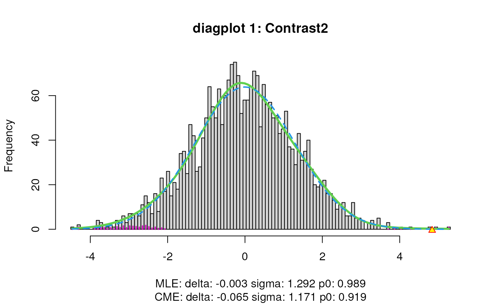
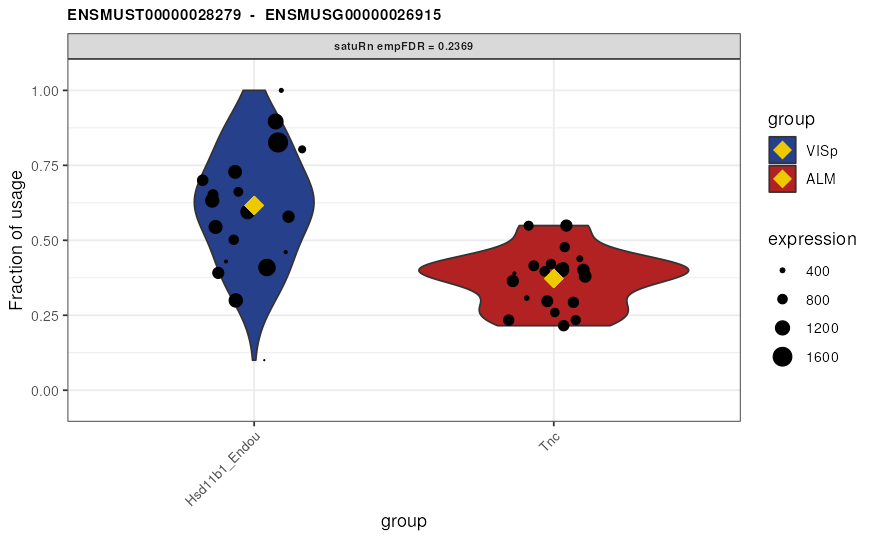

vignettes/Vignette.Rmd
Vignette.RmdAbstract
Main vignette for the satuRn package. This vignette aims to provide a detailed description of a differential transcript usage analysis with satuRn.
satuRn is an R package for performing differential
transcript usage analyses in bulk and single-cell transcriptomics
datasets. The package has three main functions.
The first function, fitDTU, is used to model
transcript usage profiles by means of a quasi-binomial generalized
linear model.
Second, the testDTU function tests for differential
usage of transcripts between certain groups of interest (e.g. different
treatment groups or cell types).
Finally, the plotDTU can be used to visualize the
usage profiles of selected transcripts in different groups of
interest.
All details about the satuRn model and statistical tests
are described in our publication (Gilis Jeroen
2021).
In this vignette, we analyze a small subset of the data from (Tasic Bosiljka 2018). More specifically, an
expression matrix and the corresponding metadata of the subset data has
been provided with the satuRn package. We will adopt this
dataset to showcase the different functionalities of
satuRn.
satuRn can be installed from Bioconductor with:
if(!requireNamespace("BiocManager", quietly = TRUE))
install.packages("BiocManager")
BiocManager::install("satuRn")Alternatively, the development version of satuRn can be
downloaded with:
devtools::install_github("statOmics/satuRn")The following data corresponds to a small subset of the dataset from
(Tasic Bosiljka 2018) and is readily
available from the satuRn package. For more details on how
the subset was generated, please check
?Tasic_counts_vignette.
We start the analysis from scratch, in order to additionally showcase some of the prerequisite steps for performing a DTU analysis.
First, we need an object that links transcripts to their
corresponding genes. We suggest using the BioConductor R packages
AnnotationHub and ensembldb for this
purpose.
ah <- AnnotationHub() # load the annotation resource.
all <- query(ah, "EnsDb") # query for all available EnsDb databases
ahEdb <- all[["AH75036"]] # for Mus musculus (choose correct release date)
txs <- transcripts(ahEdb)Next, we perform some data wrangling steps to get the data in a
format that is suited for satuRn. First, we create a
DataFrame or Matrix linking transcripts to
their corresponding genes.
! Important: satuRn is implemented such that the columns
with transcript identifiers is names isoform_id, while the
column containing gene identifiers should be named gene_id.
In addition, following chunk removes transcripts that are the only
isoform expressed of a certain gene, as they cannot be used in a DTU
analysis.
# Get the transcript information in correct format
txInfo <- as.data.frame(matrix(data = NA, nrow = length(txs), ncol = 2))
colnames(txInfo) <- c("isoform_id", "gene_id")
txInfo$isoform_id <- txs$tx_id
txInfo$gene_id <- txs$gene_id
rownames(txInfo) <- txInfo$isoform_id
# remove transcript version identifiers
rownames(Tasic_counts_vignette) <- sub("\\..*", "",
rownames(Tasic_counts_vignette))
# Remove transcripts that are the only isoform expressed of a certain gene
txInfo <- txInfo[txInfo$isoform_id %in% rownames(Tasic_counts_vignette), ]
txInfo <- subset(txInfo,
duplicated(gene_id) | duplicated(gene_id, fromLast = TRUE))
Tasic_counts_vignette <- Tasic_counts_vignette[which(
rownames(Tasic_counts_vignette) %in% txInfo$isoform_id), ]Here we perform some feature-level filtering. For this task, we adopt
the filtering criterion that is implemented in the R package
edgeR. Alternatively, one could adopt the
dmFilter criterion from the DRIMSeq R package,
which provides a more stringent filtering when both methods are run in
default settings. After filtering, we again remove transcripts that are
the only isoform expressed of a certain gene.
filter_edgeR <- filterByExpr(Tasic_counts_vignette,
design = NULL,
group = Tasic_metadata_vignette$brain_region,
lib.size = NULL,
min.count = 10,
min.total.count = 30,
large.n = 20,
min.prop = 0.7
) # more stringent than default to reduce run time of the vignette
table(filter_edgeR)## filter_edgeR
## FALSE TRUE
## 1670 3045
Tasic_counts_vignette <- Tasic_counts_vignette[filter_edgeR, ]
# Update txInfo according to the filtering procedure
txInfo <- txInfo[which(
txInfo$isoform_id %in% rownames(Tasic_counts_vignette)), ]
# remove txs that are the only isoform expressed within a gene (after filtering)
txInfo <- subset(txInfo,
duplicated(gene_id) | duplicated(gene_id, fromLast = TRUE))
Tasic_counts_vignette <- Tasic_counts_vignette[which(rownames(
Tasic_counts_vignette) %in% txInfo$isoform_id), ]
# satuRn requires the transcripts in the rowData and
# the transcripts in the count matrix to be in the same order.
txInfo <- txInfo[match(rownames(Tasic_counts_vignette), txInfo$isoform_id), ]Here we set up the design matrix of the experiment. The subset of the
dataset from (Tasic Bosiljka 2018)
contains cells of several different cell types (variable
cluster) in two different areas of the mouse neocortex
(variable brain_region). As such, we can model the data
with a factorial design, i.e. by generating a new variable
group that encompasses all different cell type - brain
region combinations.
Tasic_metadata_vignette$group <- paste(Tasic_metadata_vignette$brain_region,
Tasic_metadata_vignette$cluster,
sep = ".")All three main functions of satuRn require a
SummarizedExperiment object as an input class, or one of
its extensions (RangedSummarizedExperiment,
SingleCellExperiment). See the SummarizedExperiment
vignette (Morgan Martin, n.d.) for more
information on this object class.
For the sake of completeness, it is advised to include the design matrix formula in the SummarizedExperiment as indicated below.
sumExp <- SummarizedExperiment::SummarizedExperiment(
assays = list(counts = Tasic_counts_vignette),
colData = Tasic_metadata_vignette,
rowData = txInfo
)
# Alternatively, use a SingleCellExperiment as input object
# sumExp <- SingleCellExperiment::SingleCellExperiment(
# assays = list(counts = Tasic_counts_vignette),
# colData = Tasic_metadata_vignette,
# rowData = txInfo
# )
# for sake of completeness: specify design formula from colData
metadata(sumExp)$formula <- ~ 0 + as.factor(colData(sumExp)$group)
sumExp## class: SummarizedExperiment
## dim: 2536 60
## metadata(1): formula
## assays(1): counts
## rownames(2536): ENSMUST00000037739 ENSMUST00000228774 ...
## ENSMUST00000120265 ENSMUST00000151660
## rowData names(2): isoform_id gene_id
## colnames(60): F2S4_160622_013_D01 F2S4_160624_023_C01 ...
## F2S4_160919_010_B01 F2S4_160915_002_D01
## colData names(4): sample_name brain_region cluster groupThe fitDTU function of satuRn is used to
model transcript usage in different groups of samples or cells. Here we
adopt the default settings of the function. Without parallelized
execution, this code runs for approximately 15 seconds on a 2018 macbook
pro laptop.
system.time({
sumExp <- satuRn::fitDTU(
object = sumExp,
formula = ~ 0 + group,
parallel = FALSE,
BPPARAM = BiocParallel::bpparam(),
verbose = TRUE
)
})## user system elapsed
## 4.772 0.108 4.883The resulting model fits are now saved into the rowData
of our SummarizedExperiment object under the name
fitDTUModels. These models can be accessed as follows:
rowData(sumExp)[["fitDTUModels"]]$"ENSMUST00000037739"## An object of class "StatModel"
## Slot "type":
## [1] "glm"
##
## Slot "params":
## $coefficients
## designgroupALM.L5_IT_ALM_Tmem163_Dmrtb1
## 1.612656
## designgroupALM.L5_IT_ALM_Tnc
## 1.773648
## designgroupVISp.L5_IT_VISp_Hsd11b1_Endou
## 1.232522
##
## $df.residual
## [1] 55
##
## $dispersion
## [1] 28.14375
##
## $vcovUnsc
## designgroupALM.L5_IT_ALM_Tmem163_Dmrtb1
## designgroupALM.L5_IT_ALM_Tmem163_Dmrtb1 0.004760564
## designgroupALM.L5_IT_ALM_Tnc 0.000000000
## designgroupVISp.L5_IT_VISp_Hsd11b1_Endou 0.000000000
## designgroupALM.L5_IT_ALM_Tnc
## designgroupALM.L5_IT_ALM_Tmem163_Dmrtb1 0.000000000
## designgroupALM.L5_IT_ALM_Tnc 0.004363295
## designgroupVISp.L5_IT_VISp_Hsd11b1_Endou 0.000000000
## designgroupVISp.L5_IT_VISp_Hsd11b1_Endou
## designgroupALM.L5_IT_ALM_Tmem163_Dmrtb1 0.000000000
## designgroupALM.L5_IT_ALM_Tnc 0.000000000
## designgroupVISp.L5_IT_VISp_Hsd11b1_Endou 0.004042164
##
##
## Slot "varPosterior":
## [1] 27.72252
##
## Slot "dfPosterior":
## [1] 59.28732The models are instances of the StatModel class as
defined in the satuRn package. These contain all relevant
information for the downstream analysis. For more details, read the
StatModel documentation with ?satuRn::StatModel-class.
Here we test for differential transcript usage between select groups of interest. In this example, the groups of interest are the three different cell types that are present in the dataset associated with this vignette.
First, we set up a contrast matrix. This allows us to test for
differential transcript usage between groups of interest. The
group factor in this toy example contains three levels; (1)
ALM.L5_IT_ALM_Tmem163_Dmrtb1, (2) ALM.L5_IT_ALM_Tnc, (3)
VISp.L5_IT_VISp_Hsd11b1_Endou. Here we show to assess DTU between cells
of the groups 1 and 3 and between cells of groups 2 and 3.
The contrast matrix can be constructed manually;
group <- as.factor(Tasic_metadata_vignette$group)
design <- model.matrix(~ 0 + group) # construct design matrix
colnames(design) <- levels(group)
L <- matrix(0, ncol = 2, nrow = ncol(design)) # initialize contrast matrix
rownames(L) <- colnames(design)
colnames(L) <- c("Contrast1", "Contrast2")
L[c("VISp.L5_IT_VISp_Hsd11b1_Endou","ALM.L5_IT_ALM_Tnc"),1] <-c(1,-1)
L[c("VISp.L5_IT_VISp_Hsd11b1_Endou","ALM.L5_IT_ALM_Tmem163_Dmrtb1"),2] <-c(1,-1)
L # contrast matrix## Contrast1 Contrast2
## ALM.L5_IT_ALM_Tmem163_Dmrtb1 0 -1
## ALM.L5_IT_ALM_Tnc -1 0
## VISp.L5_IT_VISp_Hsd11b1_Endou 1 1This can also be done automatically with the
makeContrasts function of the limma R
package.
group <- as.factor(Tasic_metadata_vignette$group)
design <- model.matrix(~ 0 + group) # construct design matrix
colnames(design) <- levels(group)
L <- limma::makeContrasts(
Contrast1 = VISp.L5_IT_VISp_Hsd11b1_Endou - ALM.L5_IT_ALM_Tnc,
Contrast2 = VISp.L5_IT_VISp_Hsd11b1_Endou - ALM.L5_IT_ALM_Tmem163_Dmrtb1,
levels = design
)
L # contrast matrix## Contrasts
## Levels Contrast1 Contrast2
## ALM.L5_IT_ALM_Tmem163_Dmrtb1 0 -1
## ALM.L5_IT_ALM_Tnc -1 0
## VISp.L5_IT_VISp_Hsd11b1_Endou 1 1Next we can perform differential usage testing using
testDTU. We again adopt default settings. For more
information on the parameter settings, please consult the help file of
the testDTU function.
sumExp <- satuRn::testDTU(
object = sumExp,
contrasts = L,
diagplot1 = TRUE,
diagplot2 = TRUE,
sort = FALSE,
forceEmpirical = FALSE
)
When set to TRUE, the diagplot1 and
diagplot2 arguments generate a diagnostic plot.
For diagplot1, the histogram of the z-scores (computed
from p-values) is displayed using the locfdr function of the
locfdr package. The blue dashed curve is fitted to the mid
50% of the z-scores, which are assumed to originate from null
transcripts, thus representing the estimated empirical null component
densities. The maximum likelihood estimates (MLE) and central matching
estimates (CME) of this estimated empirical null distribution are given
below the plot. If the MLE estimates for delta and sigma deviate from 0
and 1 respectively, the downstream inference will be influenced by the
empirical adjustment implemented in satuRn (see below).
For diagplot2, a plot of the histogram of the
“empirically adjusted” test statistics and the standard normal
distribution will be displayed. Ideally, the majority (mid portion) of
the adjusted test statistics should follow the standard normal. If this
is not the case, the inference may be untrustworthy and results should
be treated with care. One potential solution is to include (additional)
potential covariates in the analysis.
The test results are now saved into the rowData of our
SummarizedExperiment object under the name fitDTUResult_
followed by the name of the contrast of interest (i.e. the column names
of the contrast matrix). The results can be accessed as follows:
## estimates se df t pval
## ENSMUST00000037739 -0.5411265 0.4827220 59.28732 -1.1209900 0.26681228
## ENSMUST00000228774 0.5411265 0.4827220 59.28732 1.1209900 0.26681228
## ENSMUST00000025204 0.1929718 0.1946942 61.28732 0.9911533 0.32550788
## ENSMUST00000237499 -0.1929718 0.1946942 61.28732 -0.9911533 0.32550788
## ENSMUST00000042857 -0.8245461 0.4352823 58.28732 -1.8942788 0.06315306
## ENSMUST00000114415 0.8245461 0.4352823 58.28732 1.8942788 0.06315306
## regular_FDR empirical_pval empirical_FDR
## ENSMUST00000037739 0.6353165 0.4186726 0.9739850
## ENSMUST00000228774 0.6353165 0.4082360 0.9739850
## ENSMUST00000025204 0.6849593 0.4633799 0.9880661
## ENSMUST00000237499 0.6849593 0.4745984 0.9902233
## ENSMUST00000042857 0.3813815 0.1740161 0.9739850
## ENSMUST00000114415 0.3813815 0.1682998 0.9739850## estimates se df t pval
## ENSMUST00000037739 -0.3801339 0.4939978 59.28732 -0.7695052 0.444648565
## ENSMUST00000228774 0.3801339 0.4939978 59.28732 0.7695052 0.444648565
## ENSMUST00000025204 0.2971434 0.1915482 61.28732 1.5512726 0.125985387
## ENSMUST00000237499 -0.2971434 0.1915482 61.28732 -1.5512726 0.125985387
## ENSMUST00000042857 -1.4866500 0.4999599 58.28732 -2.9735387 0.004275955
## ENSMUST00000114415 1.4866500 0.4999599 58.28732 2.9735387 0.004275955
## regular_FDR empirical_pval empirical_FDR
## ENSMUST00000037739 0.8020119 0.55245200 0.9866063
## ENSMUST00000228774 0.8020119 0.55586106 0.9866063
## ENSMUST00000025204 0.5031479 0.23735526 0.9374054
## ENSMUST00000237499 0.5031479 0.23534095 0.9374054
## ENSMUST00000042857 0.1301848 0.02685473 0.7902758
## ENSMUST00000114415 0.1301848 0.02720711 0.7902758The results will be, for each contrast, a dataframe with 8 columns:
estimates: The estimated log-odds ratios (log base e).
In the most simple case, an estimate of +1 would mean that the odds of
picking that transcript from the pool of transcripts within its
corresponding gene is exp(1) = 2.72 times larger in condition B than in
condition A.se: The standard error on this estimate.df: The posterior degrees of freedom for the test
statistic.t: The student’s t-test statistic, computed with a Wald
test given estimates and se.pval: The “raw” p-value given t and
df.FDR: The false discovery rate, computed using the
multiple testing correction of Benjamini and Hochberg on
pval.empirical_pval: An “empirical” p-value that is computed
by estimating the null distribution of the test statistic empirically.
For more details, see our publication.empirical_FDR: The false discovery rate, computed using
the multiple testing correction of Benjamini and Hochberg on
pval_empirical.!Note: based on the benchmarks in our publication, we always
recommend using the empirical p-values from column 7
over the “raw” p-value from column 5. When the MLE estimates
for the mean and standard deviation (delta and sigma) of the empirical
null density (blue dashed curve in diagplot1) deviate from
0 and 1 respectively, there will be a discrepancy between the “raw” and
“empirically adjusted” p-values. A deviation in the standard deviation
only affects the magnitude of the p-values, whereas a deviation in the
mean also affects the ranking of transcripts according to their
p-value.
Finally, we may visualize the usage of the top 3 differentially used
transcripts in selected treatment groups. By the setting the
transcripts and genes arguments to
NULL and specifying top.n = 3, the 3 features
with the smallest (empirically correct) false discovery rates are
displayed. Alternatively, visualizing transcripts of interest or all
transcripts within a gene of interest is possible by specifying the
transcripts or genes arguments,
respectively.
group1 <- colnames(sumExp)[colData(sumExp)$group ==
"VISp.L5_IT_VISp_Hsd11b1_Endou"]
group2 <- colnames(sumExp)[colData(sumExp)$group ==
"ALM.L5_IT_ALM_Tnc"]
plots <- satuRn::plotDTU(
object = sumExp,
contrast = "Contrast1",
groups = list(group1, group2),
coefficients = list(c(0, 0, 1), c(0, 1, 0)),
summaryStat = "model",
transcripts = NULL,
genes = NULL,
top.n = 3
)
# to have same layout as in our paper
for (i in seq_along(plots)) {
current_plot <- plots[[i]] +
scale_fill_manual(labels = c("VISp", "ALM"), values = c("royalblue4",
"firebrick")) +
scale_x_discrete(labels = c("Hsd11b1_Endou", "Tnc"))
print(current_plot)
}
satuRn returns transcript-level p-values for each of the
specified contrasts. While we have shown that satuRn is
able to adequately control the false discovery rate (FDR) at the
transcript level (Gilis Jeroen 2021),
(Van den Berge Koen 2017) argued that it
is often desirable to control the FDR at the gene level. This boosts
statistical power and eases downstream biological interpretation and
validation, which typically occur at the gene level.
To this end, (Van den Berge Koen 2017)
developed a testing procedure that is implemented in the BioConductor R
package stageR. The procedure consists of two stages; a
screening stage and a confirmation stage.
In the screening stage, gene-level FDR-adjusted p-values are computed, which aggregate the evidence for differential transcript usage over all transcripts within the gene. Only genes with an FDR below the desired nominal level are further considered in the second stage. In the confirmation stage, transcript-level p-values are adjusted for those genes, using a FWER-controlling method on the FDR-adjusted significance level.
In its current implementation, stageR can only perform
stage-wise testing if only one contrast is of interest in a DTU setting.
An analogous correction for the assessment of multiple contrasts for
multiple transcripts per gene has not yet been implemented.
Below, we demonstrate how the transcript-level p-values for the first
contrast as returned by satuRn can be post-processed using
stageR. We rely on the perGeneQValue
function:
# transcript level p-values from satuRn
pvals <- rowData(sumExp)[["fitDTUResult_Contrast1"]]$empirical_pval
# compute gene level q-values
geneID <- factor(rowData(sumExp)$gene_id)
geneSplit <- split(seq(along = geneID), geneID)
pGene <- sapply(geneSplit, function(i) min(pvals[i]))
pGene[is.na(pGene)] <- 1
theta <- unique(sort(pGene))
# gene-level significance testing
q <- DEXSeq:::perGeneQValueExact(pGene, theta, geneSplit)
qScreen <- rep(NA_real_, length(pGene))
qScreen <- q[match(pGene, theta)]
qScreen <- pmin(1, qScreen)
names(qScreen) <- names(geneSplit)
# prepare stageR input
tx2gene <- as.data.frame(rowData(sumExp)[c("isoform_id", "gene_id")])
colnames(tx2gene) <- c("transcript", "gene")
pConfirmation <- matrix(matrix(pvals),
ncol = 1,
dimnames = list(rownames(tx2gene), "transcript")
)
# create a stageRTx object
stageRObj <- stageR::stageRTx(
pScreen = qScreen,
pConfirmation = pConfirmation,
pScreenAdjusted = TRUE,
tx2gene = tx2gene
)
# perform the two-stage testing procedure
stageRObj <- stageR::stageWiseAdjustment(
object = stageRObj,
method = "dtu",
alpha = 0.05,
allowNA = TRUE
)
# retrieves the adjusted p-values from the stageRTx object
padj <- stageR::getAdjustedPValues(stageRObj,
order = TRUE,
onlySignificantGenes = FALSE
)## The returned adjusted p-values are based on a stage-wise testing approach and are only valid for the provided target OFDR level of 5%. If a different target OFDR level is of interest,the entire adjustment should be re-run.
head(padj)## geneID txID gene transcript
## 1 ENSMUSG00000058013 ENSMUST00000201421 0.01744925 0.02611903
## 2 ENSMUSG00000058013 ENSMUST00000201700 0.01744925 1.00000000
## 3 ENSMUSG00000058013 ENSMUST00000074733 0.01744925 1.00000000
## 4 ENSMUSG00000058013 ENSMUST00000202217 0.01744925 1.00000000
## 5 ENSMUSG00000058013 ENSMUST00000202196 0.01744925 1.00000000
## 6 ENSMUSG00000058013 ENSMUST00000202308 0.01744925 1.00000000## R Under development (unstable) (2023-02-22 r83892)
## Platform: x86_64-pc-linux-gnu (64-bit)
## Running under: Ubuntu 22.04.1 LTS
##
## Matrix products: default
## BLAS: /usr/lib/x86_64-linux-gnu/openblas-pthread/libblas.so.3
## LAPACK: /usr/lib/x86_64-linux-gnu/openblas-pthread/libopenblasp-r0.3.20.so; LAPACK version 3.10.0
##
## locale:
## [1] LC_CTYPE=en_US.UTF-8 LC_NUMERIC=C
## [3] LC_TIME=en_US.UTF-8 LC_COLLATE=en_US.UTF-8
## [5] LC_MONETARY=en_US.UTF-8 LC_MESSAGES=en_US.UTF-8
## [7] LC_PAPER=en_US.UTF-8 LC_NAME=C
## [9] LC_ADDRESS=C LC_TELEPHONE=C
## [11] LC_MEASUREMENT=en_US.UTF-8 LC_IDENTIFICATION=C
##
## time zone: UTC
## tzcode source: system (glibc)
##
## attached base packages:
## [1] stats4 stats graphics grDevices utils datasets methods
## [8] base
##
## other attached packages:
## [1] stageR_1.21.0 DEXSeq_1.45.2
## [3] RColorBrewer_1.1-3 DESeq2_1.39.6
## [5] BiocParallel_1.33.9 ggplot2_3.4.1
## [7] SummarizedExperiment_1.29.1 MatrixGenerics_1.11.0
## [9] matrixStats_0.63.0 edgeR_3.41.2
## [11] limma_3.55.4 ensembldb_2.23.2
## [13] AnnotationFilter_1.23.0 GenomicFeatures_1.51.4
## [15] AnnotationDbi_1.61.0 Biobase_2.59.0
## [17] GenomicRanges_1.51.4 GenomeInfoDb_1.35.15
## [19] IRanges_2.33.0 S4Vectors_0.37.4
## [21] AnnotationHub_3.7.1 BiocFileCache_2.7.2
## [23] dbplyr_2.3.1 BiocGenerics_0.45.0
## [25] satuRn_1.7.3 knitr_1.42
## [27] BiocStyle_2.27.1
##
## loaded via a namespace (and not attached):
## [1] jsonlite_1.8.4 magrittr_2.0.3
## [3] farver_2.1.1 rmarkdown_2.20
## [5] fs_1.6.1 BiocIO_1.9.2
## [7] zlibbioc_1.45.0 ragg_1.2.5
## [9] vctrs_0.5.2 locfdr_1.1-8
## [11] memoise_2.0.1 Rsamtools_2.15.1
## [13] RCurl_1.98-1.10 htmltools_0.5.4
## [15] progress_1.2.2 curl_5.0.0
## [17] sass_0.4.5 bslib_0.4.2
## [19] desc_1.4.2 cachem_1.0.7
## [21] GenomicAlignments_1.35.0 mime_0.12
## [23] lifecycle_1.0.3 pkgconfig_2.0.3
## [25] Matrix_1.5-3 R6_2.5.1
## [27] fastmap_1.1.1 GenomeInfoDbData_1.2.9
## [29] shiny_1.7.4 digest_0.6.31
## [31] colorspace_2.1-0 rprojroot_2.0.3
## [33] geneplotter_1.77.0 textshaping_0.3.6
## [35] RSQLite_2.3.0 hwriter_1.3.2.1
## [37] labeling_0.4.2 filelock_1.0.2
## [39] fansi_1.0.4 httr_1.4.5
## [41] compiler_4.3.0 bit64_4.0.5
## [43] withr_2.5.0 DBI_1.1.3
## [45] highr_0.10 biomaRt_2.55.0
## [47] rappdirs_0.3.3 DelayedArray_0.25.0
## [49] rjson_0.2.21 tools_4.3.0
## [51] interactiveDisplayBase_1.37.0 httpuv_1.6.9
## [53] glue_1.6.2 restfulr_0.0.15
## [55] promises_1.2.0.1 grid_4.3.0
## [57] generics_0.1.3 gtable_0.3.1
## [59] hms_1.1.2 xml2_1.3.3
## [61] utf8_1.2.3 XVector_0.39.0
## [63] BiocVersion_3.17.1 pillar_1.8.1
## [65] stringr_1.5.0 genefilter_1.81.0
## [67] later_1.3.0 splines_4.3.0
## [69] dplyr_1.1.0 lattice_0.20-45
## [71] survival_3.5-3 rtracklayer_1.59.1
## [73] bit_4.0.5 annotate_1.77.0
## [75] tidyselect_1.2.0 locfit_1.5-9.7
## [77] Biostrings_2.67.0 pbapply_1.7-0
## [79] bookdown_0.32 ProtGenerics_1.31.0
## [81] xfun_0.37 statmod_1.5.0
## [83] stringi_1.7.12 lazyeval_0.2.2
## [85] yaml_2.3.7 boot_1.3-28.1
## [87] evaluate_0.20 codetools_0.2-19
## [89] tibble_3.1.8 BiocManager_1.30.20
## [91] cli_3.6.0 xtable_1.8-4
## [93] systemfonts_1.0.4 munsell_0.5.0
## [95] jquerylib_0.1.4 Rcpp_1.0.10
## [97] png_0.1-8 XML_3.99-0.13
## [99] parallel_4.3.0 ellipsis_0.3.2
## [101] pkgdown_2.0.7 blob_1.2.3
## [103] prettyunits_1.1.1 bitops_1.0-7
## [105] scales_1.2.1 purrr_1.0.1
## [107] crayon_1.5.2 rlang_1.0.6
## [109] KEGGREST_1.39.0